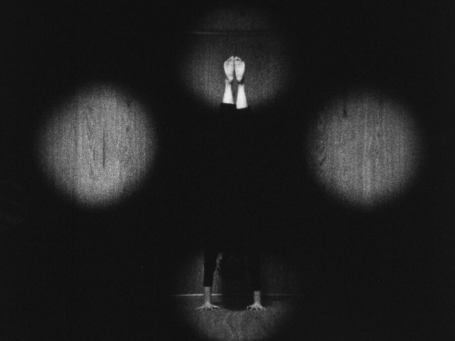

Conversations at the Edge | Kioto Aoki: Findings
Join Chicago-based filmmaker, photographer, and musician Kioto Aoki for a survey of her 16mm films—finely attuned compositions of sensorial and perceptual play—alongside the debut of a new 35mm slide work and a live improvisatory score by Robbie Lynn Hunsinger and Jamie Kempkers.
Followed by a conversation with Kioto Aoki and audience Q&A.
ABOUT THE ARTIST
Kioto Aoki (青木希音) is a Chicago-based artist, filmmaker, photographer, musician, and educator. Her work has been presented at institutions including the Barbican Centre, London; the Museum of Contemporary Art Chicago; the Asian Art Museum, San Francisco; the Heritage Museum of Asian Art, Chicago; Kobo Chika, Tokyo; and The Lab, San Francisco; among others and is held in the Joan Flasch Artists’ Book Collection at the School of the Art Institute of Chicago and the Museum of Contemporary Art Library and Archives. A fifth-generation member of the Toyoakimoto house, an okiya (geisha house) performing-arts family in Tokyo with roots in the Edo period, Aoki is a specialist in taiko, tsuzumi, and shamisen. She studied under her father, Tatsu Aoki (Toyoaki Sanjuro), and has performed professionally since childhood. She leads Tsukasa Taiko through Asian Improv aRts Midwest and maintains an active international performance and recording practice across traditional and experimental music.
CONVERSATIONS AT THE EDGE
Conversations at the Edge (CATE) is the School of the Art Institute of Chicago’s award-winning series for groundbreaking film and media art. Now in its 25th year, CATE is presented through a unique partnership between SAIC’s Department of Film, Video, New Media, and Animation; Video Data Bank; and the Siskel Film Center.
TICKETS
Free for SAIC students* $14 General admission $9 Students, seniors (65+) $8 SAIC faculty & staff / Art Institute staff* $8 Siskel Film Center members *Discounted tickets must be purchased in person with a valid ID.